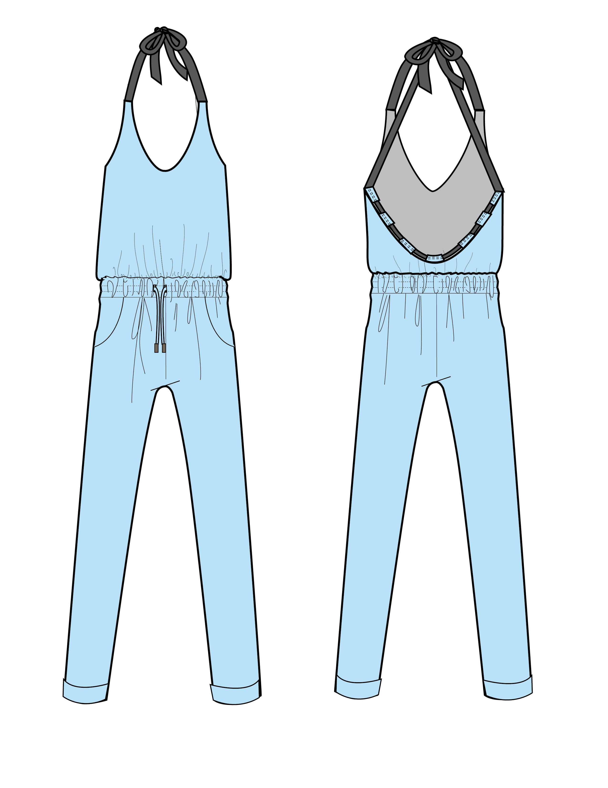

Custom Dress Design

Techpacks and Flats

Pattern Shop


Are you looking for an alternative to the standard wedding dress on the market? I will work with you to create a pattern that is customized to your measurements. I can either sew or or work with a factory to produce a professional finish.

Are you a small designer looking for guidance to set up techpacks or illustrating your garments as fashion flats? I offer services ranging from drawing technical flats in Illustrator to setting up spec sheets based on the sizing requirements for your line.
Dadon Tunic

Ivan Trouser

Beryl Dress

Petal Jumpsuit
Vasilisa Tee


My name is Bianca Lindner, and I am a Brooklyn-based fashion and technical design consultant specializing in custom fitting and patternmaking. While working in advertising, I studied fashion design in the night and weekend program at the Fashion Institure of Technology. I was especially drawn to the technical aspects of patternmaking, and along with partner Francess Jaen, I started a small swimsuit line called Oyster NYC. I transitioned over to the apparel industry to learn the ins and outs of technical design in swimwear, working on brands Jessica Simpson, Jones NY, and Red Carter. These days, I'm back to project management for my full-time job, but I fulfill my love for creation through consulting services for individuals and small designers. There's nothing that makes me happier than seeing a client in a dress that has been fitted to make her feel beautiful and confident.